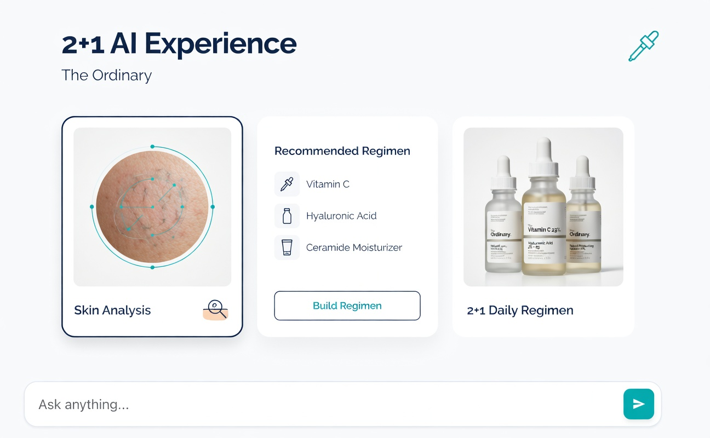
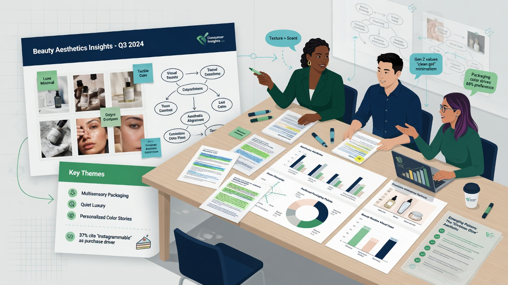
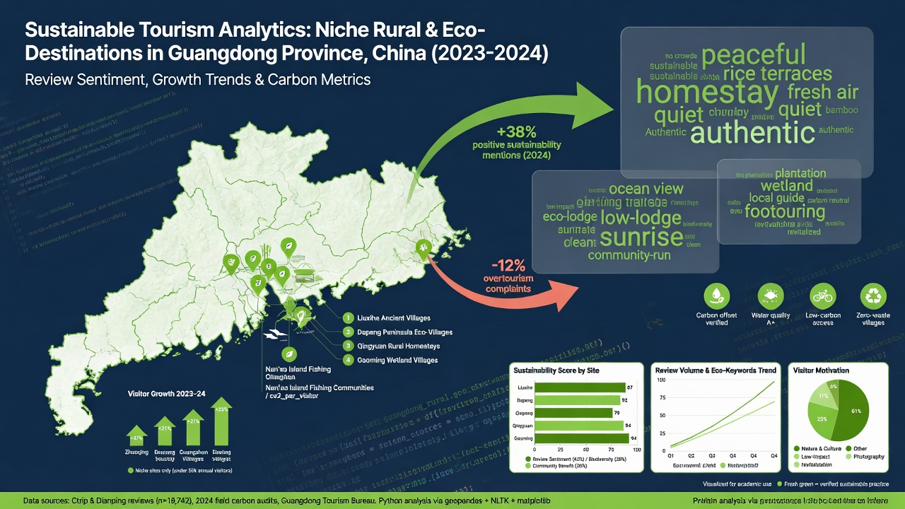

I am a BBA student at The University of Hong Kong double-majoring in Marketing and Finance. I approach problems through the lens of strategic thinking, consumer insight, and digital execution.
Through internships at Roland Berger and Ipsos, plus case competitions like Oliver Wyman, I have developed the ability to translate complex research into clear, actionable strategy — and deliver it with precision.
Bachelor of Business Administration
Double Major in Marketing & Finance
Strategic analysis and case work across consulting, research, and academia.

Oliver Wyman IMPACT Hong Kong — Built The Ordinary's own agentic AI (TOI) with 2+1 experience to reclaim customer ownership from third-party AI in the skincare space.

Conducted 20+ expert interviews and delivered bilingual insight reports for clients in the medical aesthetics sector.

Meituan Analytics Competition — Led analysis of 10k+ reviews and proposed data-driven strategies for niche destinations in Guangdong Province.
In-depth strategic case analyses at HKU. All 4 cases received an A after expert review.
A clear summary of my experience in strategy, research, and execution.
Full academic transcripts and case competition materials available upon request.